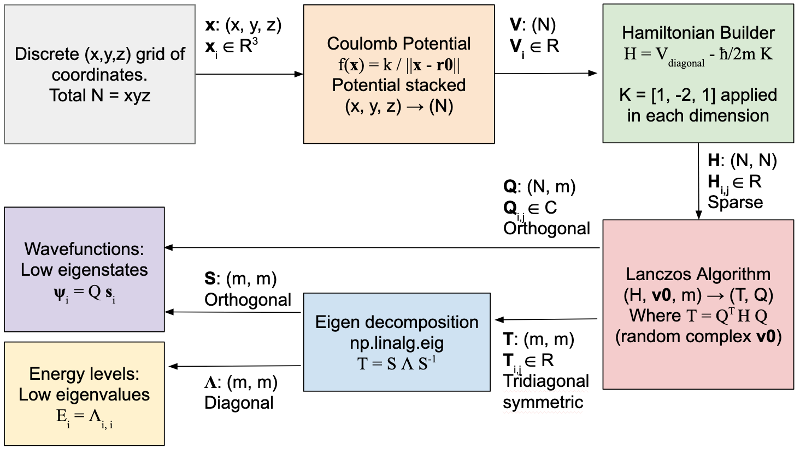
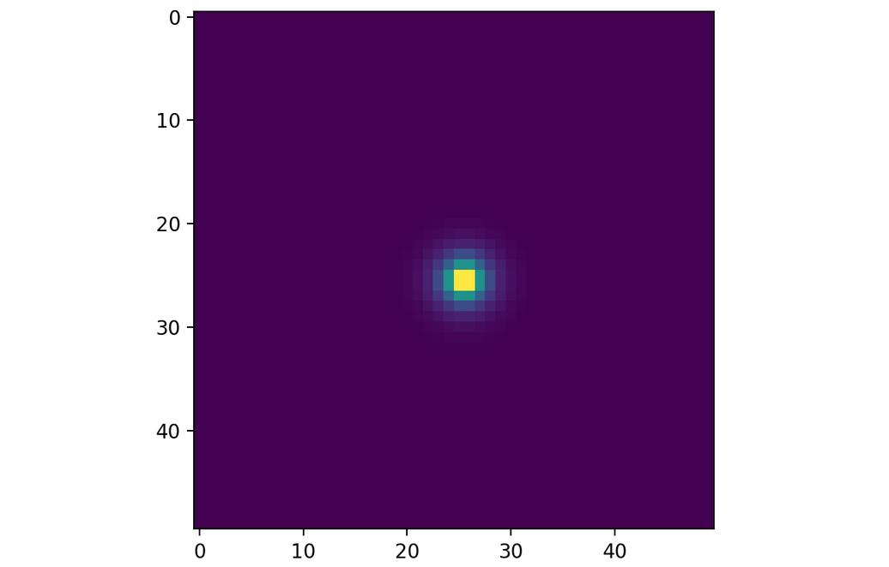
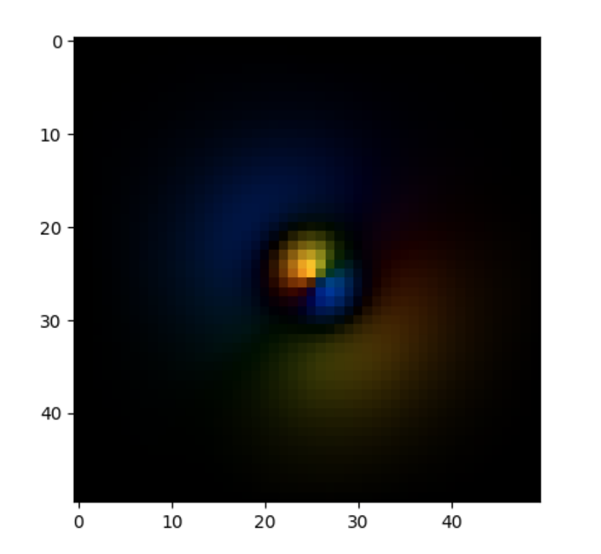

April 2025
For my IB Extended Essay I decided to use my experience in sparse-matrix methods to find the Hydrogen
energies and assosiated wavefunctions,
which I can compare to the real data of the hydrogen spectrum and the wavefunction shapes from the analytic
solution.
But before I could start, I had to write a simulation for the hydrogen atom.
That is what this page is for. For any readers, I am updating this as I'm making
the simulation, like a more polished log book.
It will contain my thought process and interesting results.
The core idea is similar to my previous work. My plan is to construct a discrete-grid sparse Hamiltonian, apply the Lanczos algorithm on it to find a tridiagonal approximation, take the eigenvalues and eigenvectors of this approximation, and project back into wavefunction space. However, instead of starting with a vector and propogating it with the matrix exponent, I have to find the eigenvectors themselves. I decided to write the simulator in Python. I am more experienced in it, and the Numpy and Scipy datastructures for sparse matrices are much faster than my JS class. Though I will still write the main algorithms myself.

My first build of the engine included my Python implementation of the Hamiltonian builder (creating a Scipy sparse matrix type) and the Lanczos algorithm. I also wrote a tridiagonal-specific diagonalizer with givens rotations, but after testing this performed much worse than np.linalg.eig, so I decided to use that instead. My potential was the basic coulomb potential (no units yet) but with the central proton set between eight grid points to prevent a pole at one of them. My parameters were a 50 by 50 by 50 grid with m = 100. Once I got it to run, I took a slice of the lowest eigenvalue, and using matplotlib I saw this:

Exactly as expected! This is the 1s orbital. The subsequent orbitals 2p, 2s, 3p, and 3s also emerged. I was suprised that it worked the first time, and sure there were errors. With a bit of effort I found them. First, there was the fact that I had done everything in real numbers. This somehow got the orbital shapes right, but wavefunctions are generally complex, so I switched to that and made the random initial vector chosen from \(\mathbb{C}\). This completely broke the resulting wavefunction. I forgot to make the inner product complex as well. Haven fixed that, I had to deal with units if I wanted to interpret anything. I chose the natural units $$\hbar = c = {\varepsilon}_0 = 1$$ And the unit of energy \(MeV\). The mass of the electron is therefore \(0.510999 MeV\), the elementary charge is \(0.302822\) (From \(e = \sqrt{4\pi \alpha}\) in natural units), and the Bohr radius, which I used as the distance between gridpoints as it is a standard atom-scale length is \(268 MeV^{-1}\) (From \(a_0 = \frac{4\pi}{m_e e^2}\) in natural units). This worked well. I plotted the results with a visualizer that uses hue to show complex phase and brightness for magnitude, like my other simulations.

I still wasn't done with the errors. Noticeably, order of the wavefunctions is wrong. I expect my computational method to converge on the analytic solution of the Schrodinger equation for the hydrogen atom, with energies only depending on principle quantum number: $$1s < 2s=2p < 3s=3p$$ But in my simulation 2p and 3p come before 2s and 3s, and the p orbital energies (eigenvalues) are lower. This is likely because the grid is not very fine near the nucleus, but since the radial density function is the same I don't know why the p orbitals would have lower energy. I tried making the grid finer, at 100 by 100 by 100 with half the grid spacing, and found: $$1s < 2s < 3s < 4s < 5s$$ The p orbitals disappeared. I realized that the Lanczos algorithm could not seperate degenerate eigenvalues: two orbitals with the same energy. It just picks one eigenvector for each energy level, so once it found the s orbitals for each principal quantum number it couldn't find any others. Therefore, while my algorithm would converge on the right energies with increased grid resolution, I would need to alter the method for a complete set of orbital shapes.